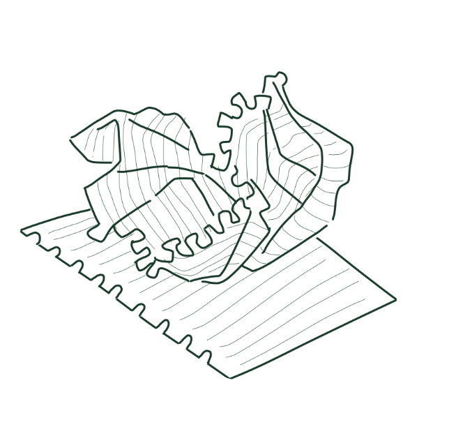

Amidst the storm that is COVID-19,
my duties as an art student felt… grossly unimportant.
Grades are just a made-up point system to gauge
how well a student could follow instructions.
GPA has no real bearing on my worth as a person
or my ability to create meaningful art.
So why would school matter now in the grand scheme of things?
I could not bring myself to care about a number.
I knew deep down that my passion for art didn’t waver
but I felt so helpless.
How much can an artist,
let alone one that is still a student,
really help the people?
Right now, making art feels only beneficial to me.

back /
index